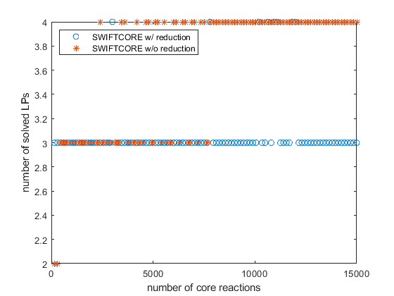
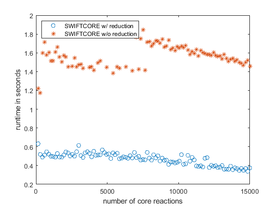

reduction_data;
load('blocked.mat');
load('reduced_net.mat');
solver = 'gurobi';
LP = zeros(2, 100);
runtime = zeros(2, 100);
errors = true(2, 100);
unblocked = find(blocked == 0);
for i = 1:100
disp(i);
core = randsample(unblocked, 150*i);
reduced_core = zeros(size(core));
for k = 1:length(reduced_net.rxns)
temp = split(reduced_net.rxns{k}, ", ");
for j = 1:length(core)
if any(strcmp(model.rxns{core(j)}, temp))
reduced_core(j) = k;
end
end
end
reduced_core = unique(reduced_core);
tic;
[coreInd, numLP] = swiftcore(reduced_net.S, reduced_net.rev, reduced_core, ones(size(reduced_net.rev)), false, solver);
runtime(1, i) = toc;
LP(1, i) = numLP;
if all(coreInd(reduced_core))
if all((1:sum(coreInd)).' == swiftcc(reduced_net.S(:, coreInd), reduced_net.rev(coreInd), solver))
errors(1, i) = false;
end
end
tic;
[coreInd, numLP] = swiftcore(model.S, model.rev, core, ones(size(model.rev)), false, solver);
runtime(2, i) = toc;
LP(2, i) = numLP;
if all(coreInd(core))
if all((1:sum(coreInd)).' == swiftcc(model.S(:, coreInd), model.rev(coreInd), solver))
errors(2, i) = false;
end
end
end
fprintf('SWIFTCORE w/ reduction returns wrong answers in %d%% of cases!\n', round(100*sum(errors(1,:))/size(errors,2)));
fprintf('SWIFTCORE w/o reduction returns wrong answers in %d%% of cases!\n', round(100*sum(errors(2,:))/size(errors,2)));
fprintf('switftcore w/ reduction was computed in %d%% of switftcore w/o reduction runtime.\n', round(mean(runtime(1, :)./runtime(2, :))*100));
figure();
plot(150*(1:100),LP(1,:),'o',150*(1:100),LP(2,:),'*');
legend({'SWIFTCORE w/ reduction','SWIFTCORE w/o reduction'},'Location','northwest');
xlabel('number of core reactions');
ylabel('number of solved LPs');
savefig('LP');
figure();
plot(150*(1:100),runtime(1,:),'o',150*(1:100),runtime(2,:),'*');
legend({'SWIFTCORE w/ reduction','SWIFTCORE w/o reduction'},'Location','northwest');
xlabel('number of core reactions');
ylabel('runtime in seconds');
savefig('runtime');
1
2
3
4
5
6
7
8
9
10
11
12
13
14
15
16
17
18
19
20
21
22
23
24
25
26
27
28
29
30
31
32
33
34
35
36
37
38
39
40
41
42
43
44
45
46
47
48
49
50
51
52
53
54
55
56
57
58
59
60
61
62
63
64
65
66
67
68
69
70
71
72
73
74
75
76
77
78
79
80
81
82
83
84
85
86
87
88
89
90
91
92
93
94
95
96
97
98
99
100
SWIFTCORE w/ reduction returns wrong answers in 0% of cases!
SWIFTCORE w/o reduction returns wrong answers in 0% of cases!
switftcore w/ reduction was computed in 29% of switftcore w/o reduction runtime.
 